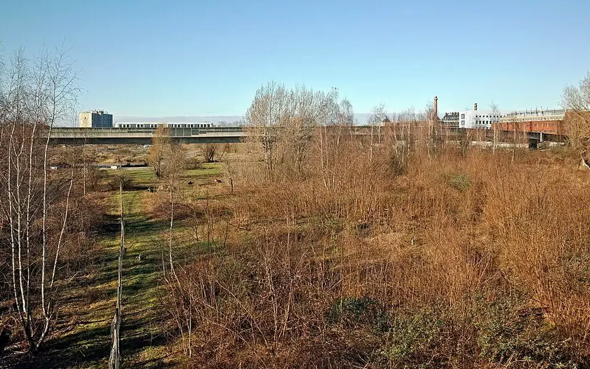
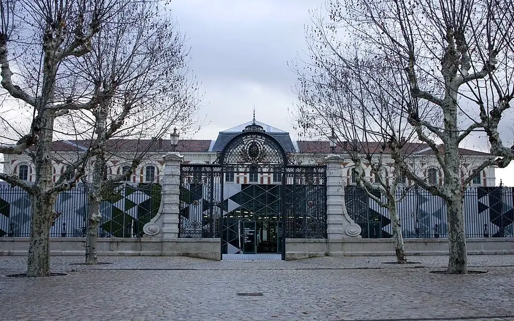
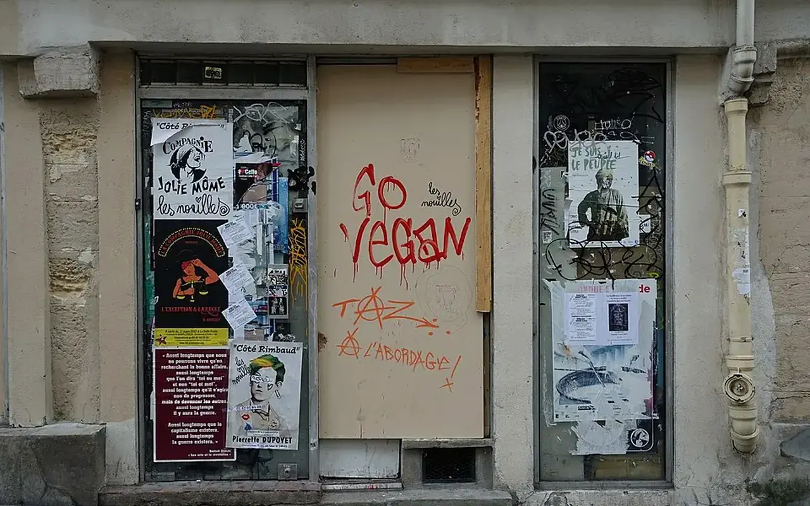
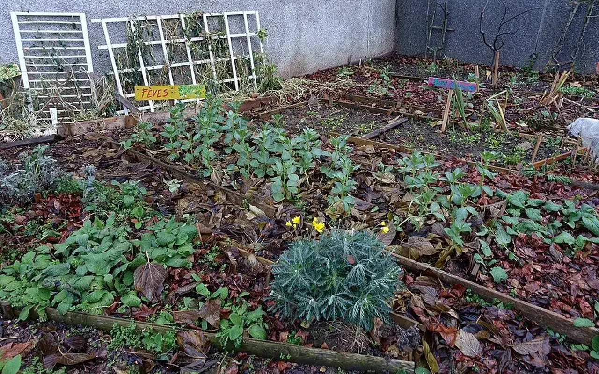
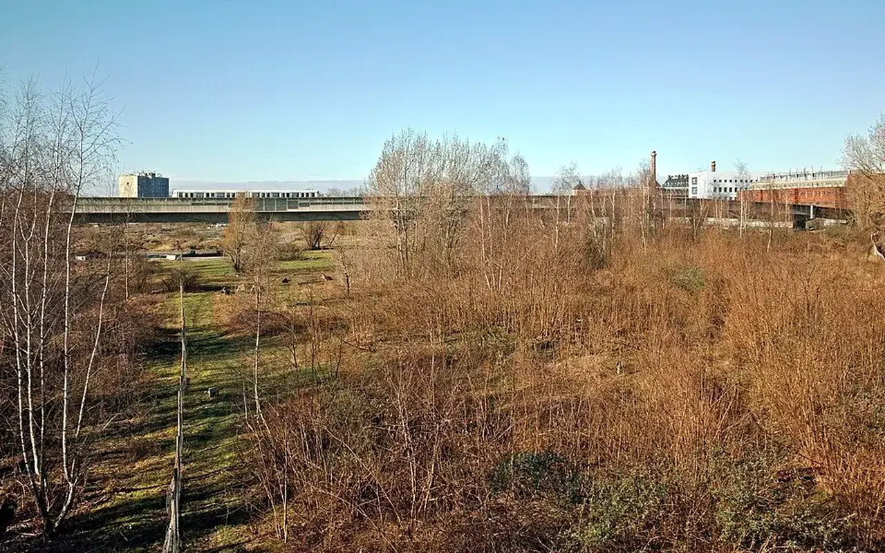

Dossier public
Matériaux de réemploi
Créer une banque nationale de matériaux pour réduire le gaspillage et soutenir les projets locaux.

Cette action prépare une organisation de collecte, stockage, orientation et redistribution solidaire, en lien avec la Matériauthèque Solidaire.
Menuiseries
PortesFen’tresVoletsEscaliers
Construction
BoisCharpentesPoutresCarrelageParquetPlaques de pl’tre
équipements
SanitairesLavabosWCDouchesChauffe-eau
électricité
LuminairesCâblagesArmoires électriques
Mobilier
BureauxTablesChaisesRayonnages
Services
CollecteStockageRevente solidaireDonsRéemploiValorisation
Collecte auprés de
Entreprises du bâtimentDémolisseursPromoteurs immobiliersGrandes surfacesCollectivitésAdministrationsHôtelsRestaurantsHôpitauxParticuliers
Donnée non publiée sans inventaire validé.
Suivi ouvert avec les contributeurs.
Donnée publiée après vérification.
Indicateur documenté au lancement validé.




Participer à cette action
La banque nationale de matériaux prépare l'inventaire, le dépôt, la recherche et la réservation encadrée des ressources réemployables.
Accéder à la banque de matériauxRéemploi des matériaux : réduire les déchets, les coûts et l’empreinte carbone
Le réemploi n’est pas seulement un geste écologique. C’est une organisation compl’te : identifier les matériaux avant qu’ils deviennent déchets, documenter leur État, prévoir la dépose, stocker, tracer, rendre visible et relier l’offre à des besoins réels. Sans méthode, les matériaux restent dispers’s, dégradès ou jetés faute d’acheteur ou de bén’ficiaire.
Les données nationales montrent l’ampleur du sujet. En 2020, la France a produit 310 millions de tonnes de déchets, dont 66 % de déchets minéraux issus du secteur de la construction. Même lorsque la valorisation matière progresse, le réemploi en amont reste essentiel pour préserver la valeur d’usage des matériaux et limiter les transports.
Les chantiers manquent souvent de temps, de surface de stockage, d’inventaire, de d’bouchés locaux ou de garanties sur l’État des matériaux. Les acteurs préférent évacuer vite plutôt que gèrer une seconde vie incertaine.
La banque de matériaux TVF peut enregistrer photos, localisation, quantité, État, disponibilité, contact et statut de validation. Elle doit devenir une interface entre entreprises, collectivités, associations, artisans et projets locaux.
Exemple fictif à visée pédagogiqueUn hôtel en rénovation pourrait proposer bureaux, portes, luminaires et sanitaires encore utilisables. Exemple fictif : la publication réelle supposerait photos, quantités, État, date de retrait et accord du propriétaire des matériaux.
Un matériau proposé est-il automatiquement accepté ?
Non. L’État, la sécurité, la traçabilité et la faisabilité logistique doivent être vérifiés.
Le réemploi peut-il remplacer l’achat neuf ?
Parfois, mais pas toujours. Il compl’te les approvisionnements classiques et demande une anticipation.
Pourquoi une banque nationale plutôt qu’un simple formulaire ?
Parce qu’il faut rechercher, filtrer, réserver, archiver et mesurer les flux dans le temps.
Sources citéesSDES, bilan 2020 de la production de déchets
Matériaux de réemploi : préserver la valeur avant qu'elle ne disparaisse
Le réemploi ne consiste pas à distribuer gratuitement des objets. Il s'agit d'identifier une ressource, de vérifier son état, sa sécurité, son stockage, son transport et sa destination dans un projet validé.
Causes à analyser
Un lot de matériaux doit être évalué par origine, quantité, état, dimensions, retrait, stockage, conformité et destination possible.
Solution TVF
TVF organise une chaîne de réemploi : proposition, tri, traçabilité, stockage provisoire, affectation à un projet validé et suivi.
Cas type : surplus de chantier
Une entreprise dispose de portes, luminaires ou bois inutilisés. TVF peut étudier la traçabilité, l'état et l'affectation à un projet territorial, sans distribution automatique.
Exemple fictif à visée pédagogique, non présenté comme une réalisation TVF.
Statut de publication : une ressource n'est publiée qu'après vérification de son état, de son origine, de sa disponibilité et des conditions de retrait.
Proposer une ressourceLecture opérationnelle
Comprendre rapidement Matériaux de réemploi
| Question | Réponse TVF | Preuve ou livrable attendu |
|---|---|---|
| Quel besoin traite la page ? | Qualifier une situation territoriale avant de proposer une action. | Fiche de lecture, diagnostic ou formulaire adapté. |
| Quels acteurs sont concernés ? | Collectivités, propriétaires, entreprises, associations, financeurs ou citoyens selon le sujet. | Interlocuteur identifié, rôle clarifié, accord de publication si nécessaire. |
| Comment passer à l'action ? | Documenter le besoin, choisir le parcours, rassembler les pièces et cadrer les responsabilités. | Fiche projet, convention, budget, calendrier et indicateurs. |
Ressources et réemploi
Du constat à l'action : Matériaux de réemploi
Cette page montre comment transformer une ressource inutilisée en contribution territoriale documentée.
Problème
Des matériaux encore utiles sont souvent stockes, jetes ou mal orientés alors que des projets locaux manquent de moyens.
Donnée utile
Repere national : le SDES documente 310 millions de tonnes de déchets produits en France en 2020, tous secteurs confondus.
Solution TVF
TVF prépare une Banque de Matériaux fondée sur la qualification, l'affectation à un projet et la traçabilité.
Méthode
Les matériaux ne sont pas distribues librement : ils sont acceptes, stockes ou orientés selon leur etat et l'usage prevu.
Acteurs
Entreprises, collectivités, artisans, associations, particuliers, logisticiens et lieux de stockage.
Impact visé
Reduire le gaspillage, limiter les coûts de projet et donner une seconde vie à des ressources locales.
FAQ
Questions fréquentes sur les matériaux
Matériaux de réemploi précise les conditions de qualification, de traçabilité et d'affectation des ressources réemployables.
Les matériaux sont-ils distribués librement ?
Non. Dans Matériaux de réemploi, les ressources sont qualifiées, tracées puis affectées à des projets validés selon leur état, leur utilité et les contraintes logistiques.
Qui peut proposer une ressource ?
Pour Matériaux de réemploi, collectivités, entreprises, associations et particuliers peuvent proposer des matériaux, du mobilier, des équipements ou des surplus réutilisables.
Que regarde TVF avant acceptation ?
Pour Matériaux de réemploi, les points clés sont l'origine, la quantité, l'état, le retrait, le stockage, l'assurance, la destination possible et la traçabilité.
Passer à l’action
Choisir le parcours adapté à votre rôle
Chaque demande doit être orientée vers un cadre clair : besoin territorial, propriétaire, ressource, financement, bénévolat ou coopération institutionnelle.